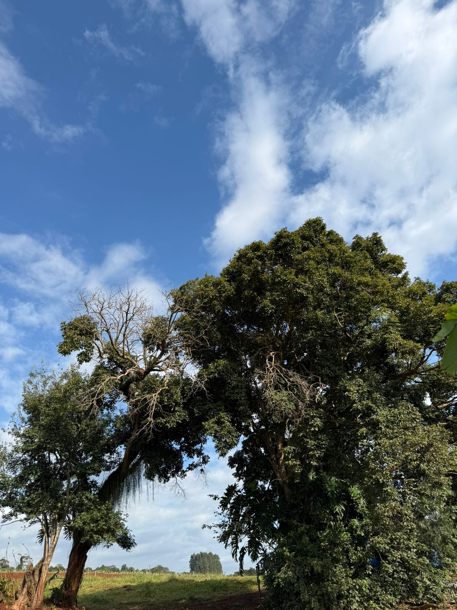
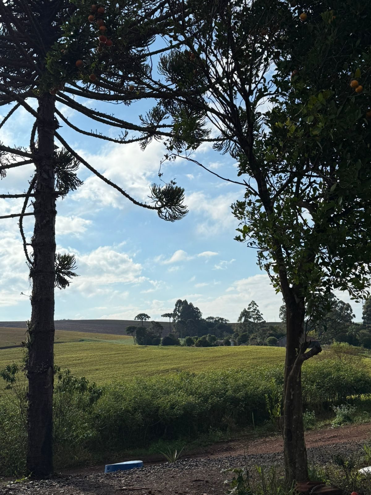

IMPORTÂNCIA
A relação campo-cidade é complexa e recíproca, com a energia desempenhando um papel fundamental em ambas. As áreas rurais fornecem matérias-primas, incluindo fontes de energia renováveis, para as cidades, enquanto as cidades, por sua vez, fornecem tecnologia e serviços essenciais para o desenvolvimento rural, incluindo sistemas de distribuição de energia. A energia é crucial para a agricultura, desde a irrigação e mecanização até o processamento e armazenamento de alimentos. A utilização de fontes de energia renováveis, como a energia solar e eólica, no campo pode aumentar a produtividade, reduzir custos e promover a sustentabilidade. As cidades são grandes consumidores de energia, com impactos ambientais significativos. A transição para fontes de energia renováveis e a implementação de sistemas de gestão de energia eficiente são essenciais para reduzir a poluição e mitigar as alterações climáticas.


COMO OCORRE?
No campo:
A energia é gerada através de fontes renováveis como energia solar (fotovoltaica), energia eólica, energia hidrelétrica (pequenas quedas d'água) e biomassa (resíduos agrícolas e animais).
Na cidade:
A energia é gerada e utilizada em diversas formas, incluindo energia elétrica (proveniente de usinas hidrelétricas, termelétricas e outras fontes), energia térmica (utilizada para aquecimento e geração de vapor), energia química (utilizada em veículos e indústrias), e energia renovável (solar, eólica, hidrelétrica, etc).